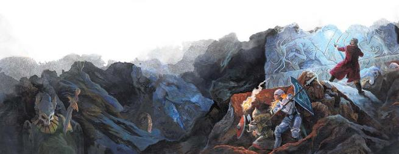

冒险者们不必超越艾伯伦就可以找到奇诡而又魔幻的领域。在艾伯伦的地表下有一层由石头和土壤构成的地层，那些深入地下的人可能会发现天然洞穴、达坎地精的遗迹，或者索尔乌达(Sol Udar)矮人的王国。但凯博尔绝不仅仅是岩石和泥土。黑暗的地底中包含了无数的半位面――在这些空间中，影响物质世界的规则并不适用。这些半位面是凯博尔最为反常的地方：邪魔们在其间重塑，异变魔被囚禁在他们自己的位面层中（类似于艾伯伦的其他位面的层）。这些半位面可以是致命的，但它们也可以为探索和发现地表以下令人惊奇的新世界提供意想不到的机会。第4章的"地底世界"提供了探索凯博尔上层区域的方向；本节则概述了冒险者在深入探索时可能遇到的半位面。
凯博尔的半位面有点像其他位面的层的概念。每个半位面都是有限的空间，尽管它可以像房子一样小，也可以像一个国家一样大。它的边界可能由不可逾越的物理屏障或力场墙来界定，也可能是一个可以环绕的空间――如果你在一个方向上走得足够远，你会发现绕回了起点。
到达一个半位面总是需要一个传送门。在某些情况下，半位面旅行还需要进行仪式或者处于位面相交状态下，并且有些传送门可能无法通过，它们被龙或者护门者德鲁伊的远古禁锢所封印。然而，许多传送门虽然是活跃的，但却几乎无法被感知到；在隧道中穿行的冒险者可能会在不知不觉中就通过了一个前往铁境(Ironlands)的传送门。传送门是静态的，固定在一个地方，只要传送门保持开放，冒险者总是可以通过回溯他们的脚印，返回来处。半位面也可能有两个或更多的传送门，每个传送门都能通往主物质位面的任何地方。腐化者迪恩(Dyrrn)的王国在阴影湿地和铁根山脉下有传送门，而达贡的地精氏族凯斥沙拉特(kech Shaarat)和恶魔荒原的加什卡拉兽人(Ghaash’kala)都使用了与铁境相连的传送门。因此，半位面可以实现长距离的快速旅行；冒险者可以进入夸巴拉下面的半位面，大约走了一英里后从隧道中出来的时候，就已经抵达了布鲁兰。
半位面与艾伯伦的13个位面有很多共同之处。自然法则可能在其间并不适用，时间、空间或其他元素可能以反常的方式表现出来。一个半位面可以拥有另一个位面的一些属性，比如费尼亚的灼热明光(Burning Bright)特性或拉玛尼亚的原初之物(Primordial Matter)特性。但所有半位面无法划归到一个统一的风格；每个半位面都是完全独特的。曾有智者说，这些半位面是凯博尔的梦境。其他人则认为，半位面是未完成的念头――现实世界的早期草图或是未完成位面的雏形。
虽然半位的规模通常是有限的，但它们的构造并不遵循固定的方式。你有可能在艾伯伦地下一英里处发现一个看似通向天空的山谷......但那并不是艾伯伦的天空! 与位面不同，凯博尔的半位面不包含任何艾伯伦的天体――那里的天空中可能有月亮、星环，甚至太阳，但它们将会是完全前所未见的。
尽管没有一个共同的风格将所有半位面归类，但却有三个常见的半位面类别：心、狱、影。
霸主――拉克・塔尔赫什(Rak Tulkhesh)、苏・卡特什(Sul Khatesh)以及其他――据说是凯博尔的第一批子嗣。他们是世间初诞的邪魔，并且每个霸主都带来了一大批低阶恶魔。当一个邪魔死亡时，它的魂髓会回到凯博尔。每个都被束缚在凯博尔的一个特定的半位面中转生――霸主之心。这也是霸主们无法被永久消灭的原因之一；每一个霸主都是凯博尔本身架构的一部分，而在艾伯伦遇到的霸主只是其本质的投影。为了打败霸主，恶魔时代的英雄们用银焰束缚住他们不朽的魂髓，以防止他们回到自己的心之半位面进行重塑。这实质上相当于切断了大脑与心脏的联系――但心之半位面仍然存在。霸主的低阶仆从――邪兽鬼和其他恶魔爪牙――会在霸主们重塑时返回心之半位面，一旦霸主的束缚被打破，它将在其心之领域里恢复全部的力量。
心之半位面相对较小，大约相当于一个大型城市的大小。每一个在外观和特性上都映射了它所属的霸主。就像囚禁一个霸主灵魂的龙晶碎片可以影响一个地区一样，通往心之半位面的传送门往往也会影响到周围的地区；被认为是通往撒法拉斯的显能区域可能是通往苦难之盾(Bitter Shield)的门户。
虽然霸主并没有有意识地显现在他们的心之领域中，但他们的魂髓仍然充满到其间。心之半位面通常居住着许多受霸主约束的低阶魔物。许多魔物在他们的霸主获得自由之前都不迫切渴望回到艾伯伦，而另一些则在砂主中服务，把心之半位面当作一个避难之地。下面将介绍少数几个心之半位面，但总数至少有三十个――每位霸主皆有。
拉克・塔尔赫什的心之领域是一座深红色的堡垒，砖石被鲜血浸透，城墙上钉满了生锈的铁刺。在堡垒的底层周围，邪兽鬼和其他魔鬼进行着永无止境地战斗，这些无谓的搏杀反映了他们主人的嗜血本性。
“影剑”摩达克什Mordakhesh the Shadowsword经常在他实施一个又一个的阴谋之间回到苦难之盾，并被誉为堡垒的主宰。
苦难之盾拥有撒法拉斯的难遏暴怒Unquenchable Fury和血戮Bloodletting特性。
苏・卡特什在心之半位面是一座由绘有银纹的黑色砖石建成的高塔。它在三轮陌生的新月的浮光下熠熠生辉。此处是永夜之地，秘密守护者的仆从们一边对着月亮咏唱颂歌，一边进行着血腥的祭祀，并在地上描画出古老的符文。塔楼里有一个关于黑暗秘密的图书馆，旁边还有一个缮写室，恶魔们在那里写下了将会交给凡间术士的阴影之书。在恶魔荒原的阿什塔卡拉(Ashtakala)城下有一个通往影蔽之塔的入口，当邪兽鬼赫克图拉(Hektula)不照看阿什塔卡拉的图书馆时，她就住在这里。
影蔽之塔拥有西拉尼亚的通译寰宇Universal Understanding特性和玛伯尔的永恒阴影Eternal Shadows特性。
当某些事物被描述为"困在凯博尔trapped in Khyber"时，通常意味着它被困在凯博尔的某个半位面。期中最臭名昭著的凯博尔囚徒就是异变魔(daelkyr)，但也可能有其他人――要么是不朽的灵魂，要么是被他们的敌人困在半位面的凡间生灵。
腐化者迪恩Dyrrn栖身于要害之殿Palace of Sinew，贝拉希拉Belashyrra居于无障之目城堡Citadel of Lidless Eyes(这两个地方在《艾伯伦: 从终末战争中崛起》中有描述)。瓦尔拉拉Valaara被束缚在最深的巢穴中，本书第8章有描述。据传，异变魔奥拉斯克Orlassk住在一个雕刻成巨大的石像鬼的堡垒里，石像鬼在凯博尔的隧洞中四处游荡；也许是石像鬼存在于奥拉斯克的狱之半位面，也可能是这个巨大的生物内容纳有一个通往其牢狱的传送门。
在处理狱之半位面时，DM将不得不决定传送门的限制。例如在异变魔半位面，异变魔不能离开它们，但其他生物可以自由进出。因此，迪恩的爪牙们可以从要害之殿蜂拥而出，但只要护门者的封印依旧保持完整，迪恩本人就无法离开。被束缚的本质和异变魔的强大力量使得他们以自己想象中的图景塑造了他们的半位面，但较弱的生物只会被困在更为传统的监狱里。
与心之半位面和狱之半位面不同，影之半位面没有明确的用途。它们不是监狱或邪恶的堡垒，而是世界的奇异映射。就像瑟瑞奥特一样，它们通常违背了自然逻辑――而这也往往赋予了它们巨大的价值。在铁根山脉的地底之下，矮人发现了一个有着结满宝石树木的领域。在内阳谷(Vale of the Inner Sun)，生物则不会随着时间老去。
许多智者称这些为 "影之半位面"，因为这些似乎是其他位面的影子；卡哈尔Khaar的深渊森林是拉玛尼亚的映射，而铁境与撒法拉斯有一些相似之处。但事实上，凯博尔的半位面与其他位面没有任何联系，它们也没有受到艾伯伦的自然影响或西伯瑞亚的星环之光的触动。也许交织在这些半位面中的核心是凯博尔梦境的回响，或者是对可能发生的事情的暗示......更或者它们的相似性只是莫名其妙的巧合。
影之半位面可能拥有一些可被使用或者收集的重要资源――但这些区域总是会有一个恶毒的方面。邪魔在这里很常见，甚至居住在那里的凡间生物也很邪恶。在影之半位面停留过久通常会招致腐化。有无数的影之半位面，有些很小，有些则很大；这里提到的只是几个例子。
初看之下，这似乎是一片原始森林，但仔细探看，会发现它充满了恐怖。这个半位面被充满鲜血的深红色藤蔓所缠绕。这里充斥着怪兽、扭曲的野兽，它们并不像异变魔的畸形动物那样怪异，但却同样致命；即使是最迷人的鸣禽也是残忍的食肉者。森林中奇怪的植物可以用来制作药水或致命的毒药，对于那些敢于直面其恐怖的人来说，这是宝贵的资源。在卡哈尔的深渊森林中，任何对毒素伤害没有天然免疫的生物都会变得容易受到毒素伤害，并且在对毒素的豁免检定上处于劣势。
这个区域的风景都是由金属形成。精金树长出锋利的树叶，带有钢锋的草叶足以划破柔软的鞋子。这个拥有撒法拉斯的血戮特性的半位面，是一群魔鬼和恶魔的家园，他们在此进行着他们自己无尽的战争。这些恶魔钟爱战斗和欺压凡人，但幸运的是，他们无法离开自己的领域。恶魔荒原的加什卡拉Ghaash'kala兽人袭击了铁境，从恶魔战士那里掠夺武器。凯斥沙拉特Kech Shaarat（见第4章）将他们的深层宝库扩展到了铁境；经过许多个世纪，这些达尔注①与某个恶魔部族建立了联盟，使他们能够保住这片领地。至于这个联盟的基础，以及沙拉特人能否以其他方式利用这个联盟，则由DM来决定。
注1：原文dar为地精语，意为人民，是对达坎地精的统称
黄泉巨龙会的信徒普遍相信，在凯博尔内有一个天堂，一个没有痛苦和死亡的地方。内阳谷确实存在，它拥有瑞西亚的寂止肉身Stillness of Flesh特性注②和伊瑞安的生命之光Light of Life特性注③。然而，这种不朽是有代价的；长期居住在谷地的生物会慢慢变异，最终变成极不寻常的畸形。谷地的居民――有些人已经在那里生活了几个世纪――对外来者没有好感，造访之人必须证明自己的价值才有资格沐浴在内阳的虹彩之光中。
注2：第五章，瑞西亚：冰封之原有介绍
注3：第五章，伊瑞安：永恒黎明有介绍
|
边栏：欧瑞恩家族与半位面 半位面可以作为通往远方的虫洞――一种极具价值的货运和客运手段！欧瑞恩家族已经发现了一个这样的通道；它在通路城（安黛尔）和瓦纳城（埃鲁登原野）这两个城市的会馆都建在连接到一个微小、安全的影之半位面的传送门之上。这使得欧瑞恩可以在几分钟之内在这两个城市之间移动。然而，这两座城市已经很接近了，而且通达率很好，所以这一直是一种秘密资源，而不被广泛地应用于商业用途。 然而，近来的终末战争和悲叹之日the Mourning扰乱了欧瑞恩家族的许多贸易路线，飞艇的发展正在威胁着该家族在陆路旅行中的主导地位。为了重新获得安全感，夸提・D・欧瑞恩(Kwanti
d’Orien)男爵正在积极寻找新的半位面通道。他梦想着找到一条可以安全、迅速穿越哀伤故地的路线，这条路线可以成为欧瑞恩家族的商贸路线，甚至可以承载一列闪电列车。但夸提并不知道半位面有多危险，在他的努力下，他将很可能打开那些本应紧闭的大门。 |